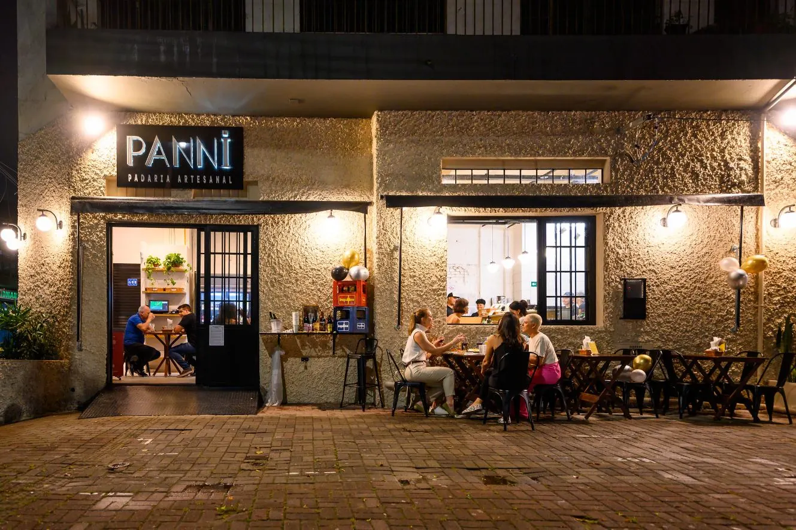
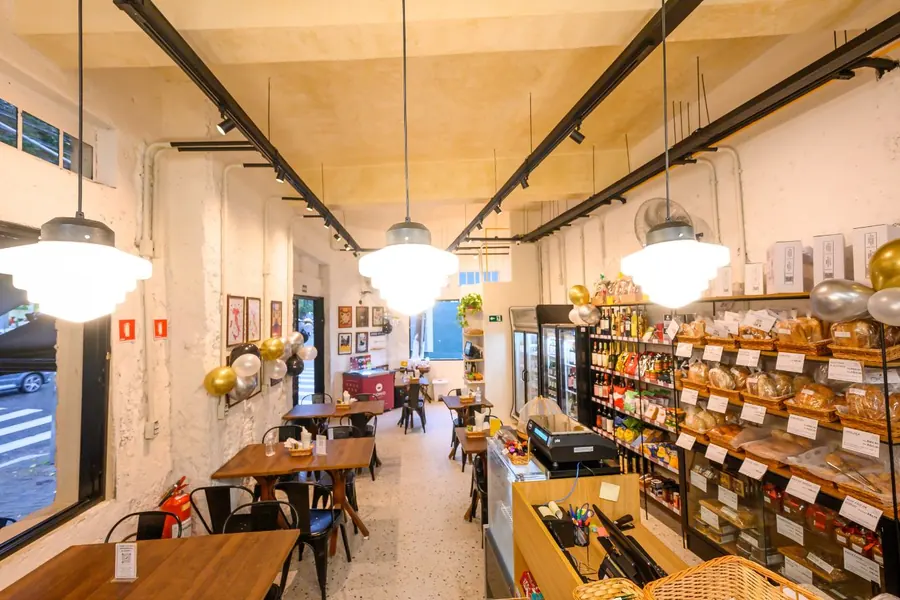
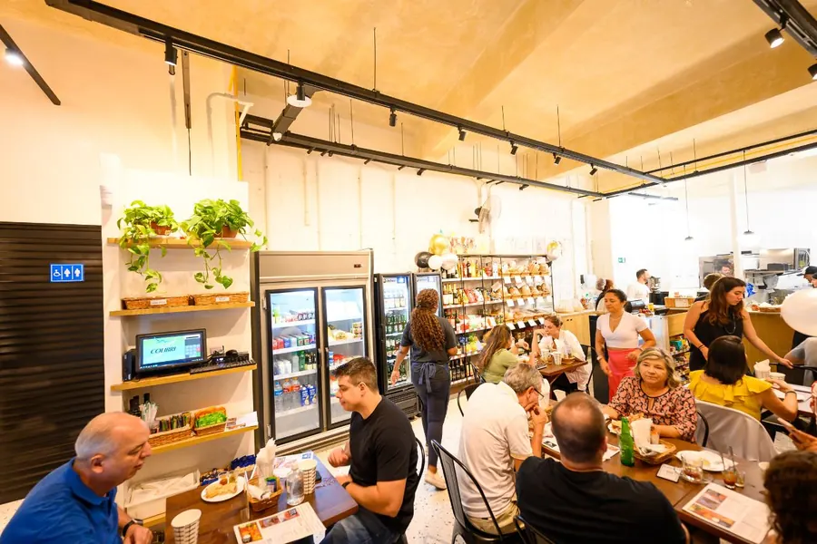
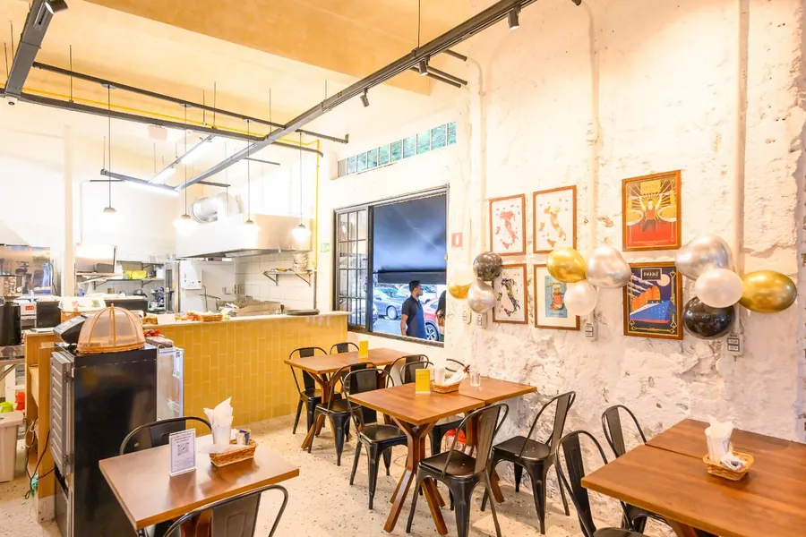
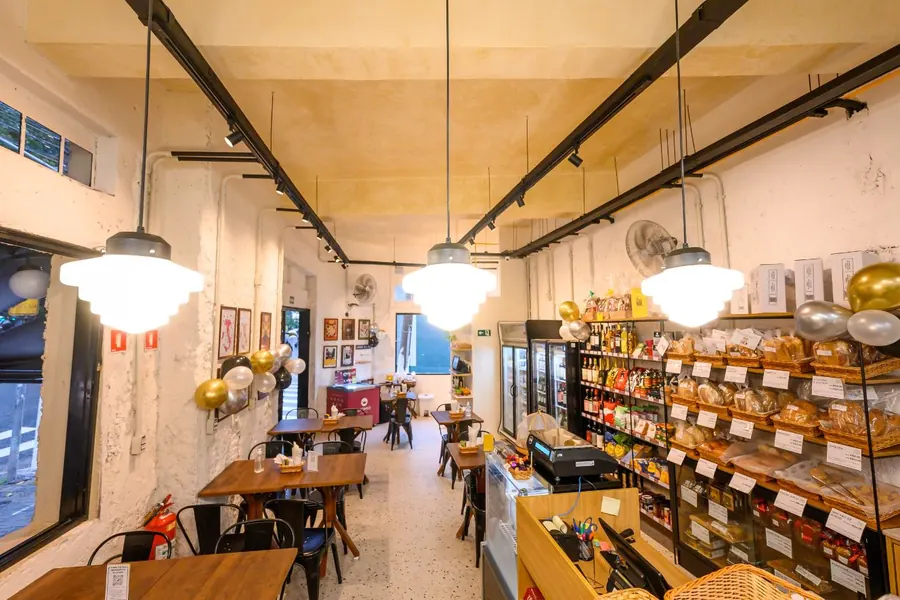
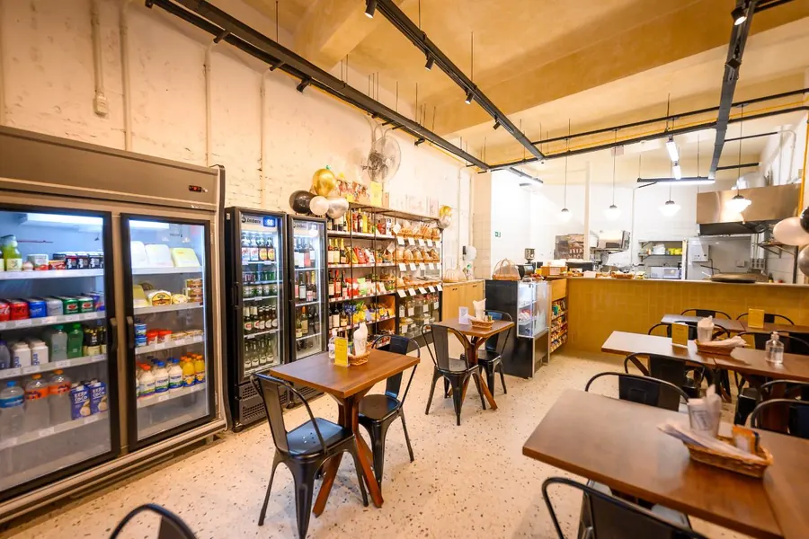
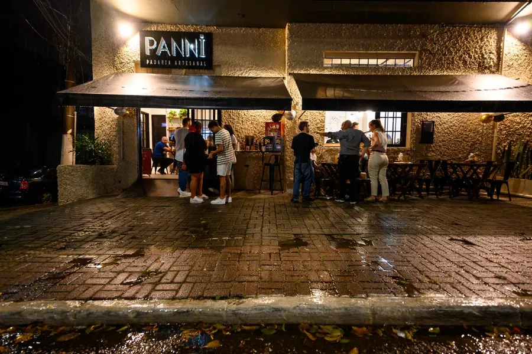
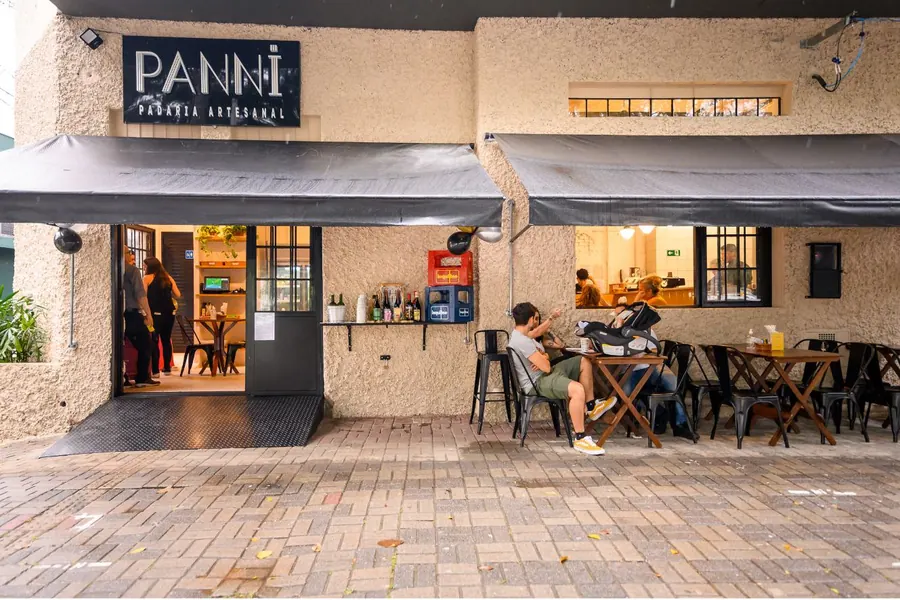
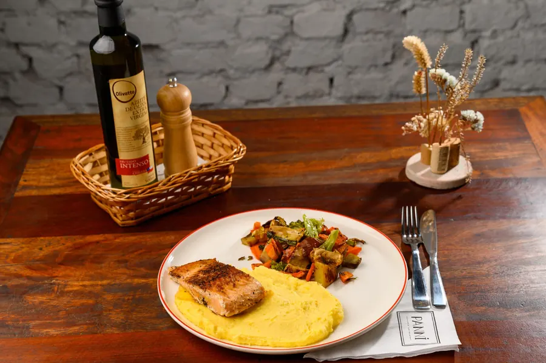
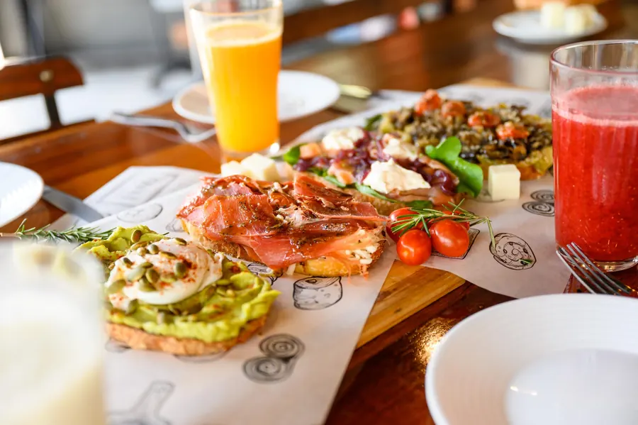

Pães, doces e cheiro bom de café.
A segunda casa da Panni, na Casa Verde. Os mesmos produtos artesanais, preparados na hora com ingredientes frescos, num salão amplo e com mesas na calçada.
Todos os dias, das 8h às 22h
A Panni que você conhece, na Braz Leme.
A Casa Verde é a segunda unidade da Panni, com a mesma qualidade nos produtos artesanais e o mesmo preparo na hora. Pé-direito alto, luminárias pendentes, prateleiras de pães e vinhos e mesas por todo o salão.
Serve do café da manhã ao jantar e, no fim do dia, a calçada vira lugar de drinks e de conversa.
- Salão amploArejado e cheio de luz
- CalçadaMesas do lado de fora
- VinhosUma seleção especial
- EventosNa unidade Água Fria
Pé-direito alto e mesa farta.







Calçada, drinks e um bom papo.
Quando escurece, as mesas de fora enchem. Uma taça de vinho, um drink ou a pizza romana para fechar o dia sem pressa.


Do café ao jantar.
O cardápio vai do café da manhã ao jantar, com opção vegetariana: cafés e chás, panetteria, ovos e toasts, sanduíches, brunch e combos, pizza e sobremesas.
- Café da manhãTodos os dias, desde as 8h
- Almoço executivoSegunda a sexta, 12h às 15h
- Brunch e combosSábados e domingos
- Pizza + vinho por R$ 39,90Segunda a quarta, após 19h
Av. Braz Leme, 606.
- Endereço
- Av. Braz Leme, 606
Casa Verde, São Paulo, SP - Telefone
- (11) 3856-9390
- (11) 3856-9390
- contato@pannipadaria.com
- Segunda8h às 22h
- Terça8h às 22h
- Quarta8h às 22h
- Quinta8h às 22h
- Sexta8h às 22h
- Sábado8h às 22h
- Domingo8h às 22h